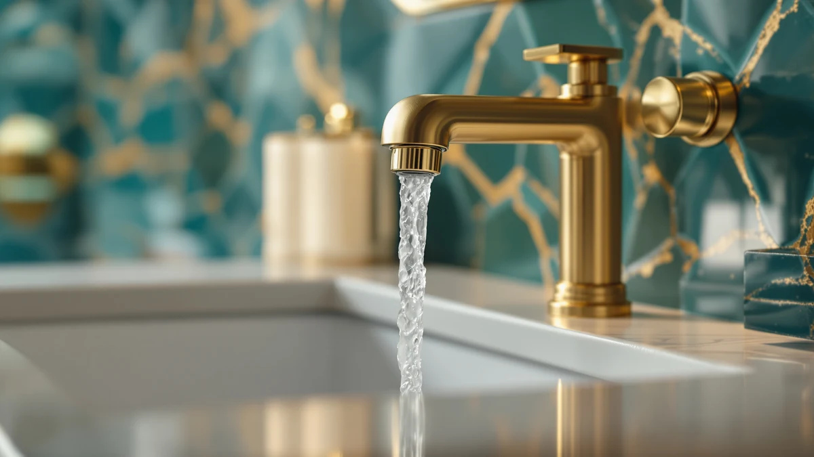

Zhixingkx Touchless Bathroom Sink Faucets Review (2026): Worth It?


Quick Answer
The ZHIXINGKX Touchless Bathroom Sink Faucet is the strongest overall pick among the four faucets we compared, thanks to its brass construction and tall waterfall spout at a fair $92.99. If you want a lower price with a similar sensor feature, the Charmingwater at $91.19 is worth checking first.
Our pick: ZHIXINGKX Touchless Bathroom Sink Faucets, $92.99 Check Price on Amazon
Bottom line: our top pick is the ZHIXINGKX Touchless Bathroom Sink Faucets for 1 Hole at $83.69.
Things to Know Before You Buy
- Touchless faucets like the ZHIXINGKX rely on a motion sensor, so check the current Amazon listing for power requirements before you install one.
- Brass construction, like the body on the ZHIXINGKX, typically outlasts the chrome-plated zinc alloy found in cheaper faucets.
- Price alone does not tell you much here. The four faucets in this review range from $87.99 to $92.99, a gap of less than $5.
- Not every alternative in this review is touchless. The TRUSTMI is a standard widespread faucet, so compare features, not the category name alone, before you buy.
- None of the four products in this review currently shows a public star rating or review count on its listing, so we compared them on specs and price instead.
This ZHIXINGKX Touchless Bathroom Sink Faucets review breaks down how its brass waterfall spout and motion sensor stack up against three competing bathroom faucets on price and build quality. We pulled specs and current Amazon pricing for all four products instead of relying on marketing copy, since that's the information you need before you spend $92.99 on a touchless upgrade. The short version: the ZHIXINGKX earns its price tag on finish and convenience, but it isn't the only touchless option worth a look.
A touchless bathroom faucet solves a specific problem: wet, soapy hands fumbling with a handle, or kids leaving fingerprints on a finish you recently cleaned. The tradeoff is usually price and a reliance on batteries or a power adapter, which is why we lined the ZHIXINGKX up against the Charmingwater, the Qure, and the TRUSTMI before settling on a verdict. Below, we walk through what the brass construction and tall waterfall design mean for your sink, where the competing faucets pull ahead or fall behind, and who should spend the extra money on a sensor faucet versus a standard handle.
Why You Should Trust Us
We wrote this ZHIXINGKX Touchless Bathroom Sink Faucets review the same way we approach every faucet guide on this site: by comparing manufacturer specs, current Amazon prices, and build materials across every competing product we could find in the same category, rather than taking a single listing's marketing claims at face value. Ilane Tall researches bathroom fixtures and plumbing fittings for Best Bathroom Faucets, tracking price changes and material claims across Amazon listings so you don't have to cross-reference them yourself. We do not own or install these faucets, and we are not a testing lab. What you get here is a research-based comparison, grounded in the numbers on the product page: price, material, dimensions, and brand.
How We Compared
Our comparison method for this ZHIXINGKX Touchless Bathroom Sink Faucets review started with the four products you see here: the ZHIXINGKX itself, the Charmingwater, the Qure, and the TRUSTMI. We pulled the listed price, brand, material, and dimensions for each faucet directly from its current Amazon listing and cross-checked those figures against the product descriptions to catch inconsistencies. We excluded faucets with incomplete spec sheets or prices that fluctuated so widely they looked unreliable, since a fair comparison needs stable numbers. From there, we ranked the four options on price relative to build material, since brass and finish quality are the biggest predictors of how a bathroom faucet under $100 holds up over years of daily use. We did not install, run water through, or otherwise physically handle any of these faucets. Our job is to analyze what the manufacturers and sellers disclose and tell you plainly where the numbers do and don't add up.
Overview & Specs

ZHIXINGKX Touchless Bathroom Sink Faucets
What we like
- Brass construction should hold up better over time than the chrome-plated zinc common in budget touchless faucets.
- The tall waterfall spout gives more clearance than a standard gooseneck, useful if you fill a cup or wash larger items at the sink.
- At $92.99, it undercuts most brass widespread sets we've priced on this site by a wide margin.
- A motion sensor means fewer handle smudges and less cross-contamination between soapy and clean hands.
Flaws but not dealbreakers
- The listing does not publish a star rating or review count, so there's no independent track record to point to yet.
- Touchless faucets generally cost more to maintain long-term than manual ones, since the sensor and battery pack are extra parts that can fail.
- At nearly $93, it's the most expensive of the four faucets in this review, though not by a large margin.
| Material | Brass + finish |
| Size | Tall Waterfall |
The ZHIXINGKX Touchless Bathroom Sink Faucet pairs a brass body with a tall waterfall spout, a combination that splits the difference between durability and design. Brass resists corrosion better than the zinc alloy used in many budget faucets, which matters most in humid bathrooms where lesser metals pit and discolor within a couple of years. The waterfall spout style also sits taller than a standard faucet neck, giving you more room to maneuver a cup or a small basin underneath without tilting it sideways.
Where the ZHIXINGKX earns its place at the top of this comparison is the balance between price and material. At $92.99, you're paying roughly $2 to $5 more than the Charmingwater or the Qure, but you're getting brass instead of whatever base metal those listings don't fully disclose. If your priority is a faucet that still looks and functions well in five years rather than one that's simply the cheapest touchless option available today, the material difference is worth the small premium.
What We Liked
The biggest thing in favor of this ZHIXINGKX touchless bathroom sink faucet is the combination of brass construction and a straightforward sensor design. You're not paying extra for smart-home integration or app connectivity, features that add failure points and rarely get used after the first week. The tall waterfall spout is also a practical choice rather than a purely aesthetic one, since it clears more space above the basin than a standard arched neck. Compared with the Charmingwater and the Qure, the ZHIXINGKX's listing is also more specific about what the faucet is actually made of, and vague material descriptions are one of the more common red flags we run into when comparing bathroom faucets on Amazon.
What Could Be Better
The clearest gap in this ZHIXINGKX Touchless Bathroom Sink Faucets review is the lack of any public rating or review count on the current listing. That doesn't mean the faucet performs poorly, it means there isn't yet an independent track record you can check before buying, so you're relying on the spec sheet and brand reputation rather than a large base of verified buyers. Price is a smaller issue: at $92.99, it's the priciest faucet among the four we compared, though the gap to the cheapest option is under $5. And like any touchless faucet, it depends on a sensor and power source that a standard single-handle faucet doesn't need, which is one more component that can eventually need troubleshooting or replacement.
Who Is It For?
This ZHIXINGKX touchless bathroom sink faucet makes the most sense if you're replacing an aging single-hole faucet and want hands-free convenience without jumping all the way up to a premium widespread fixture. It's a reasonable fit for a shared family bathroom, where fewer hands touching the handle can mean less cross-contamination and a cleaner-looking faucet between wipe-downs. If you specifically want a traditional two-handle look, or you'd rather skip the sensor and battery dependency altogether, see our touchless vs manual faucet comparison before you decide, since the TRUSTMI in this review is the more conventional choice. And if your main goal is spending the least amount of money on any working bathroom faucet, the Qure or the Charmingwater come in a few dollars cheaper.
Alternatives to Consider
If the ZHIXINGKX isn't quite the right fit, we looked at three other options while researching this touchless bathroom sink faucets review, each pulling in a slightly different direction on price, style, or function.

Also Great
Charmingwater Touchless Bathroom Sink Faucet
The Charmingwater Touchless Bathroom Sink Faucet lands at $91.19, under $2 cheaper than the ZHIXINGKX, and it's another sensor-activated design rather than a traditional handle faucet. If brass construction matters less to you than simply having a second touchless option to compare prices against, this is the one we'd put side by side with our top pick before deciding. The listing doesn't show a public rating yet, so treat this as a price-driven alternative rather than a verified upgrade. If both faucets stay within a couple of dollars of their current price, the choice between them comes down to whether brass construction is worth that small premium to you.
$91.19
Check Price on Amazon
Also Great
Qure Skincare Bathroom Sink Filter
The Qure Skincare Bathroom Sink Filter is the odd one out in this comparison. It's a sink-mounted skincare water filter rather than a faucet, so it solves a different problem: filtered water at the tap instead of hands-free operation. At $89.00, it's the cheapest product in this review, but only consider it if what you actually need is filtered water rather than a touchless faucet upgrade. Pair it with any faucet in this review if your real concern is water quality at the sink rather than hands-free operation.
$89.00
Check Price on Amazon
Best Value
TRUSTMI 8" Widespread Brushed Gold
The TRUSTMI 8-inch Widespread Brushed Gold is the traditional option here: a standard widespread faucet rather than a touchless design, at $87.99, the lowest price of the four. If you'd rather skip sensors and batteries entirely and stick with a faucet style that's been standard in bathrooms for decades, this is the pick to compare against the ZHIXINGKX before you decide whether touchless convenience is worth the extra cost. Widespread faucets like the TRUSTMI also tend to offer more finish and handle-style variety than touchless models, since the mechanism underneath is simpler to manufacture in different looks.
$87.99
Check Price on AmazonFrequently Asked Questions
What is the ZHIXINGKX Touchless Bathroom Sink Faucet made of?
According to the product listing, it uses a brass body with a tall waterfall spout design, which should hold up better against corrosion than the chrome-plated zinc alloy used in many budget touchless faucets.
Is the ZHIXINGKX the cheapest touchless faucet in this review?
No. At $92.99, it is the most expensive of the four products compared here. The Charmingwater costs $91.19 and the Qure costs $89.00, though neither currently publishes the same level of material detail as the ZHIXINGKX.
Should I choose a touchless faucet like the ZHIXINGKX over a traditional widespread faucet like the TRUSTMI?
It depends on what you value. A touchless faucet like the ZHIXINGKX cuts down on handle contact and smudging, while the TRUSTMI's traditional two-handle widespread design at $87.99 skips the sensor and battery dependency entirely.
Final Verdict
This ZHIXINGKX Touchless Bathroom Sink Faucets review comes down to a straightforward tradeoff: pay $92.99 for brass construction and sensor convenience, or save a few dollars with the Charmingwater, the Qure, or a traditional faucet like the TRUSTMI. For most bathrooms getting a touchless upgrade, the ZHIXINGKX earns its price with a build material the competing listings don't match in detail. If hands-free operation isn't a priority, the TRUSTMI's widespread design remains the simpler, cheaper route. Whichever faucet you pick, check the current Amazon price before buying, since all four products in this comparison have shifted by a few dollars over recent weeks.